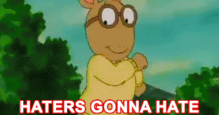

Art Unveiling Hate: A Journey through Creative Expression
to "Art Unveiling Hate: A Journey through Creative Expression", a digital exhibition exploring how art confronts hate. Through visual, textual, video, and audio mediums, this immersive experience showcases the transformative power of art in addressing the complexities of hate. Discover artworks that expose the destructive nature of hate, challenge stereotypes, and evoke empathy. Personal narratives and immersive video installations provide insights into confronting hate, while audio compositions express resilience and hope. This exhibition celebrates art's ability to amplify marginalized voices, spark dialogue, and inspire activism. Engage fully with the artworks to provoke introspection, ignite conversations, and foster personal and collective transformation. Join us on this enlightening journey as art unveils the darkness of hate and illuminates paths towards healing and understanding.
Content Warning: This online exhibition contains sensitive and potentially distressing material. It discusses topics like discrimination, racism, sexism, homophobia, religious intolerance, and xenophobia. There may also be instances of offensive language used within the context of personal narratives or historical accounts. Please engage with this exhibition mindfully, considering your emotional well-being. If you find the content overwhelming, take a break or seek support. The purpose of this exhibition is to promote awareness, empathy, and positive change. Remember to approach the topic with respect and a commitment to building a more inclusive society. If you need immediate assistance or someone to talk to, please refer to the resources provided within the exhibition or seek help from relevant helplines or support organizations in your region.
Before entering the exhibition, we would ask you to rate the following messages according to their hatefulness.
Digital hate targets individuals based on race, religion, gender, opinion, visibility, profession, and other arbitrary personal characteristics. It can have devastating effects on victims and can lead to emotional distress, anxiety, and depression. It erodes self-esteem and can cause social isolation. The constant barrage of hateful messages and online harassment can leave long-lasting psychological scars, impacting overall well-being and sense of safety.
"Online hate feels worse because people can hide behind fake names.
They say hurtful things without consequences.
We need better ways to stop hate speech online."
"Digital hate affects not just me, but also the people I care about. It hurts to see them face abuse and hate online.
We need to protect one another."
"Hate speech goes beyond the screen.
It hurts my relationships, self-esteem, and sense of belonging.
Words have power, and online hate leaves lasting wounds."
"Digital hate made me rethink how I use the internet.
It's disheartening to see so much hate without consequences.
We need rules to stop online hate."
"Online hate robbed me of my sense of security. The constant trolling and cyberbullying created a hostile environment."
"Hate speech taught me the power of empathy and support.
It's crucial to stand up against hate and provide a safe haven for those who are targeted."
The history of hate is a complex tapestry that spans civilizations and epochs, evolving alongside human societies. Hate has manifested in diverse forms throughout history, fueled by fear, ignorance, power dynamics, and deep-rooted biases.
Across ancient civilizations, hate often emerged from differences in ethnicity, religion, and cultural practices, contributing to conflicts and animosities. As societies advanced, hate persisted through conquests, colonization, and the subjugation of indigenous peoples, perpetuating discrimination, violence, and systemic oppression.
In more recent history, hate took on a chilling form during the Holocaust, where millions were targeted and systematically exterminated based on their identity. This stark atrocity serves as a somber reminder of the devastating consequences hate can unleash.
Furthermore, the rise of digital platforms has given rise to new dimensions of hate. Online hate speech, fueled by anonymity and the amplification of extremist ideologies, has become prevalent. The internet provides a breeding ground for cyberbullying, targeted harassment, and the spread of hateful ideologies, posing significant challenges to online safety, inclusivity, and social cohesion.
However, history also reveals inspiring resistance to hate. Civil rights movements, feminist struggles, and LGBTQ+ activism have challenged and dismantled systems of hate, fostering progress and advancing human rights.
Today, hate continues to persist in various forms, both online and offline. Digital hate and hate speech pose new challenges, requiring proactive measures to combat discrimination, promote digital literacy, and foster a culture of tolerance and respect.
Understanding the history of hate, including its digital manifestations, is vital in order to confront its pernicious legacy. By learning from the past, we can strive to build inclusive societies that reject hate, embrace diversity, and promote empathy and understanding for all.
Science defines hate as a profound and intense emotion characterized by strong animosity, aversion, or hostility towards individuals, groups, or entities.
In the context of digital hate, scientific research highlights the unique manifestations of hate in the digital realm.
Digital hate encompasses various forms, including hate speech, cyberbullying, online harassment, and the propagation of extremist ideologies through digital platforms.
Scientists examine the psychological, neurological, and social aspects of digital hate to understand its nature and impact.
Psychologically, digital hate involves negative emotions, aggression, and harmful intentions expressed through online channels.
Neurologically, studies suggest that the brain processes digital hate similarly to offline hate, activating regions associated with negative emotions and social cognition.
Socially, digital hate is influenced by societal norms, cultural factors, and online interactions, shaping attitudes and behaviors.
Understanding the scientific dimensions of digital hate is crucial for developing effective strategies to combat its harmful effects and promote a safer and more inclusive online environment.
Art, in its diverse forms, has emerged as a potent force in grappling with the complexities of hate.
Through visual, textual, and performative means, artists have tackled this daunting subject with great impact.
Art serves as a documentation and witness, capturing the stark realities of hate and discrimination in a way that preserves history and raises awareness.
It confronts stereotypes and prejudices head-on, challenging societal biases through thought-provoking imagery and narratives.
Moreover, art amplifies the voices of marginalized communities, providing a platform for their stories, struggles, and resilience to be heard and acknowledged.
By fostering empathy and connection, art invites viewers and audiences to experience the emotional depth of those affected by hate, forging pathways to understanding and compassion.
Art also fuels activism and social change, inspiring individuals to take action against hate through protest art, installations, and community engagement projects.
Furthermore, art offers a space for healing and catharsis, enabling both artists and audiences to process the pain associated with hate and transform it into something meaningful and empowering.
In these ways, art plays a pivotal role in addressing hate, promoting dialogue, and driving positive societal transformation.
Visual art engages with hate by capturing its raw emotions, exposing its destructive nature, and challenging societal biases.
It serves as a powerful medium to confront hate, provoke dialogue, and inspire empathy.
Through visual imagery, artists convey the impact of hate and its potential for transformation. What do you see?
(1. Jennie Cooley (2020),
2. Bruce Nauman (1983),
3. Anastasiya Malakhova (2014),
4. Jessica Hyde (2015),
5. Art Hazelwood (2007),
6. unknown,
7. unknown)
Sound art engages with hate by using auditory elements to convey its emotional depth and challenge societal norms.
Through experimental techniques, layered compositions, and evocative sounds, sound art exposes the raw intensity of hate and its destructive impact.
It invites listeners to confront uncomfortable truths, fostering reflection, empathy, and a call for change.
Close your eyes. What yo you hear?
Poetry engages with hate by harnessing the power of language to confront, deconstruct, and transcend its destructive force. Through vivid imagery, metaphor, and powerful emotions, poetry explores the complexities of hate, exposing its roots and consequences. It offers a space for catharsis, empathy, and dialogue, encouraging healing, understanding, and the pursuit of a more compassionate world.
Fire and Ice
Some say the world will end in fire,
Some say in ice.
From what I've tasted of desire
I hold with those who favour fire.
But if it had to perish twice,
I think I know enough of hate
To say that for destruction ice
Is also great
And would suffice.
Robert Frost
Hatred
I shall hate you
Like a dart of singing steel
Shot through still air
At even-tide,
Or solemnly
As pines are sober
When they stand etched
Against the sky.
Hating you shall be a game
Played with cool hands
And slim fingers.
Your heart will yearn
For the lonely splendor
Of the pine tree
While rekindled fires
In my eyes
Shall wound you like swift arrows.
Memory will lay its hands
Upon your breast
And you will understand
My hatred.
Gwendolyn Bennett
I hate life, how much hate. Only
I hate life, how much hate. Only
by your hearing has it bled to death. Alas, my index! Oh, yellow
lemon! you will give me
a minute of sea, life
as if made of bird seeds, the earth
that will not leave them deserted.
Do not even find them, put them away in two little boxed, brother, as if
for white girls
WASP (transl. Pablo Gervas)
The relationship between hateful art and artificial intelligence (AI) is a complex and controversial one. AI, as a technology, can be harnessed for various purposes, including the creation and dissemination of art. However, when it comes to hateful art, AI can amplify and facilitate the spread of harmful content. The images were created using Dall E mini using prompts such as "hateful art" or "hate art".
After getting familiar with the topic, we would ask you to rate the following messages according to their hatefulness.
You have experienced hate through different artistic lenses. Take your time to reflect on what you just saw, read and felt. Please share your feelings with others in the Reflection Room .
.for joining us in the exhibition, "Art Unveiling Hate: A Journey through Creative Expression." If you encounter digital hate, please do not hesitate reporting it to official offices as described at the website of the Bundeskanzleramt or to NGOs such as Rat auf Draht who can help you dealing with the consequences of it. Through powerful artworks, we explored the complexities of hate and the transformative potential of art. By challenging stereotypes, fostering empathy, and inspiring activism, the exhibition urged us to confront bias and work towards a more inclusive world. Let us carry the lessons learned into our lives, striving to combat hate and promote understanding. Thank you for being a part of this transformative experience.
.How was your experience with the digital exhibition? If you want to restart the exhibition, please click here.